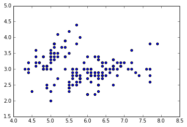

pip install ipython-sqlcsv format from herepostgresql locallyimport pandas as pd from pandas import DataFrame import matplotlib.pyplot as plt %matplotlib inline
Load the sql extension
%load_ext sql
Connect to the database
%sql postgresql://jloach@/
'Connected: jloach@'
Load some data into a DataFrame and put it in the database
column_names = ['sepal_length', 'sepal_width', 'petal_length', 'petal_width', 'target'] iris = pd.read_csv('iris.csv', names=column_names) %sql DROP TABLE iris %sql PERSIST iris
Done. 'Persisted iris'
%%sql SELECT * FROM iris LIMIT 3
3 rows affected.
| index | sepal_length | sepal_width | petal_length | petal_width | target |
|---|---|---|---|---|---|
| 0 | 5.1 | 3.5 | 1.4 | 0.2 | Iris-setosa |
| 1 | 4.9 | 3.0 | 1.4 | 0.2 | Iris-setosa |
| 2 | 4.7 | 3.2 | 1.3 | 0.2 | Iris-setosa |
result = _
result = %sql SELECT * FROM iris print(result.keys) print(result[0].target) print(result[0][1])
150 rows affected. ['index', 'sepal_length', 'sepal_width', 'petal_length', 'petal_width', 'target'] Iris-setosa 5.1
df = result.DataFrame() df.groupby('target') plt.scatter(df.sepal_length, df.sepal_width)
<matplotlib.collections.PathCollection at 0x10a7aeba8>
